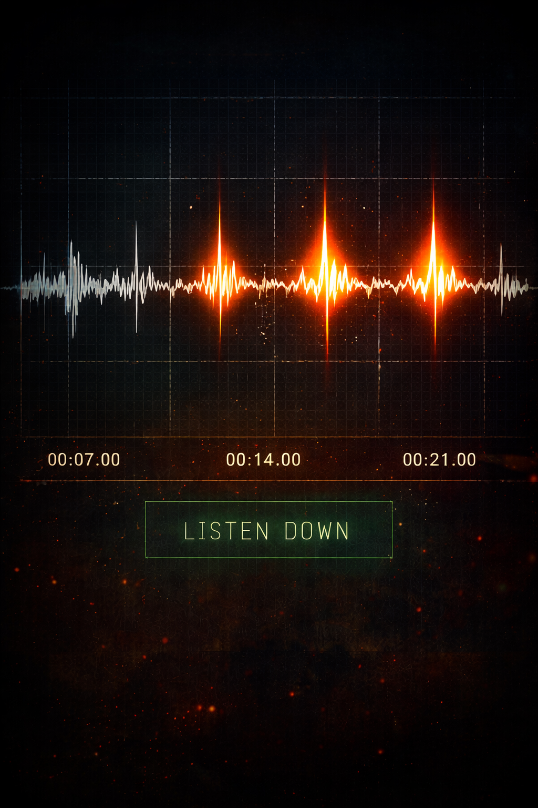
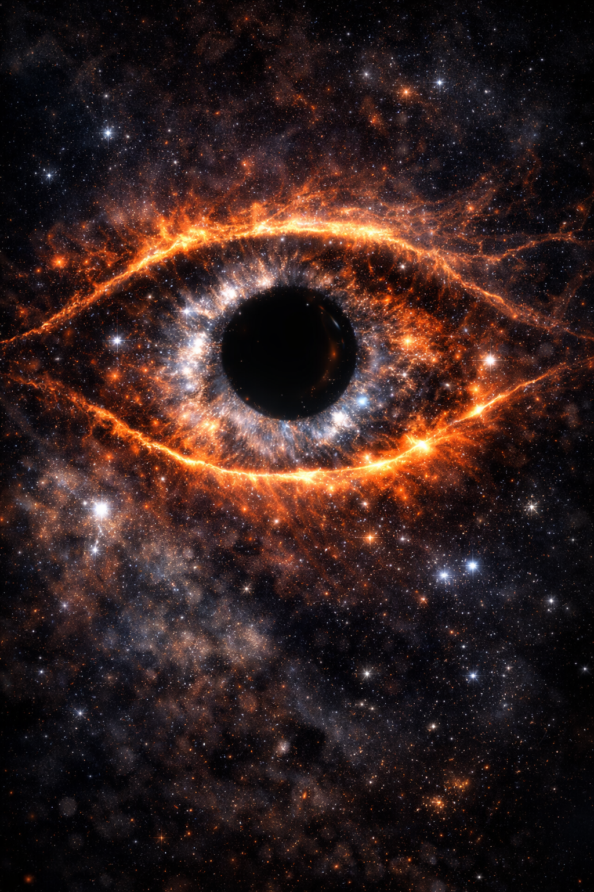
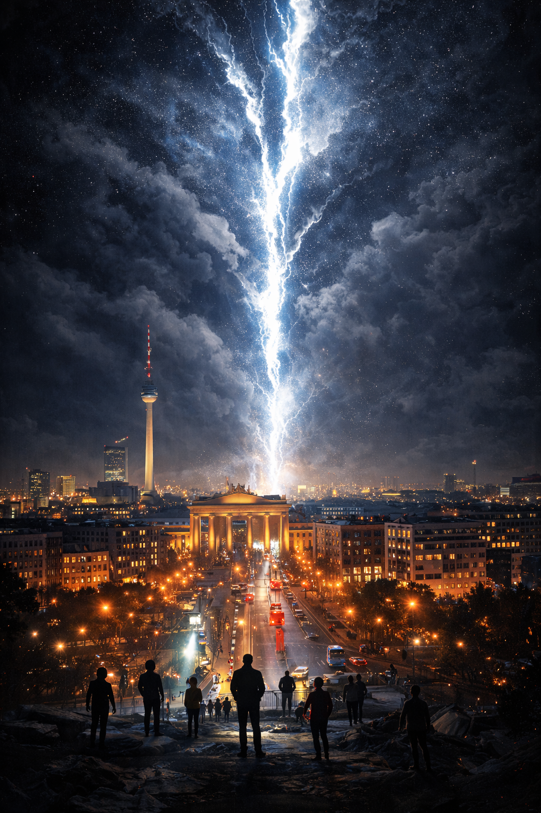
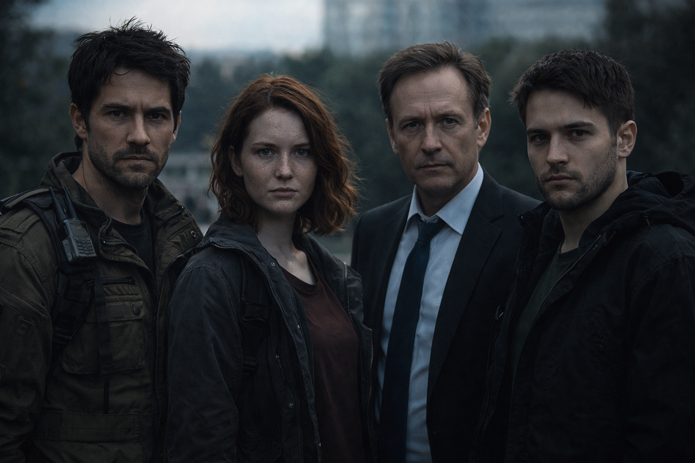

Plankova suza
Filozofski naučno-fantastični roman o granici realnosti, kvantnoj pukotini i kosmičkoj hijerarhiji slojeva postojanja. Kada nauka dotakne Planckovu granicu — otvara se pitanje: da li je naš univerzum samo kap u oku nečega većeg?
Galerija




Odlomci
Odlomak I – Šum
Berlin je noću imao drugačiji miris. Nije to bio miris grada, nego miris mašina koje rade i kad ljudi spavaju. Vlažan vazduh, metal, ozon iz tramvajskih žica, i ona tupa aroma asfalta koji pamti dan.
Vukadin Ristić je išao peške kroz praznu ulicu, dok mu se dah pretvarao u paru. U džepu mu je vibrirao telefon. Majka. Nije se javio. Sve te reči su postale lažne čim su se izgovorile.
Stigao je do zgrade instituta. Na ulazu je svetlela mala lampica sa logom: Max-Planck-Institut für Quantenoptik. Planckova konstanta. Planckova dužina. Planckovo vreme. Granice.
Odlomak II – Suza
Kao da je vazduh izgubio svoj čvrsti zakon, kao da se prostor više nije ponašao kao prostor, nego kao površina koja može da se savije pod pritiskom.
Odbrojavanje na ekranu je došlo do nule. DROP IN 00:00. I ništa se nije dogodilo.
Jer suza nije događaj u našem vremenu. Suza je promena u sloju iznad. A mi smo samo posledica.
„Sada“, rekao je Vukadin. I pre nego što je Lea stigla da pita šta znači „sada“, laboratorija je na trenutak nestala. Ne u mraku. Nestala je kao koncept.